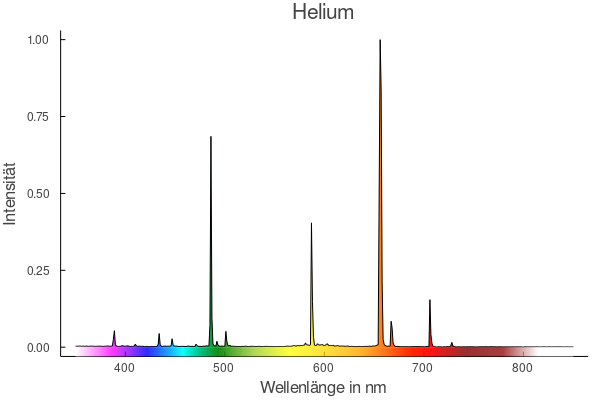
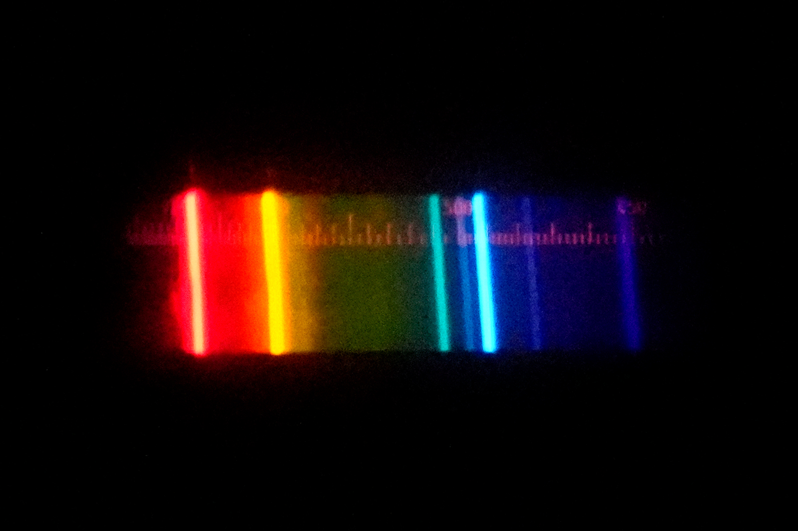

CCD-Spektrometer



Das Spektrum vom Helium ist ein Linienspektrum. Im sichtbaren Bereich sind die Linien mit der höchsten Intensität bei den Wellenlängen 668 nm (orange), 492 nm (blaugrün), 588 nm (gelb) und 707 nm (rot). Weitere Linien liegen bei 388 nm und 439 nm (violett), 447 nm (blau), 502 nm (grün) und 505 nm (grün).